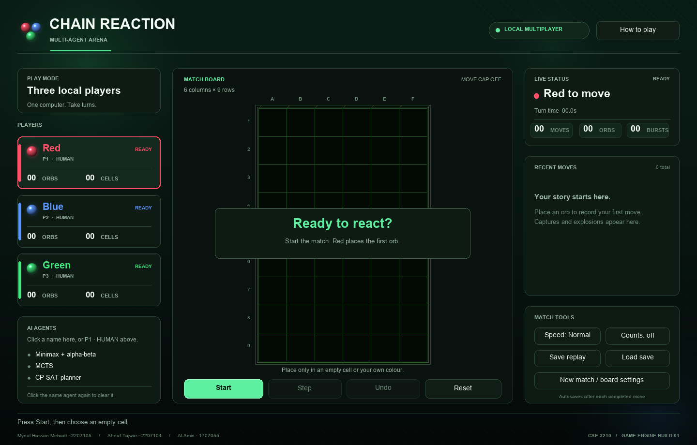
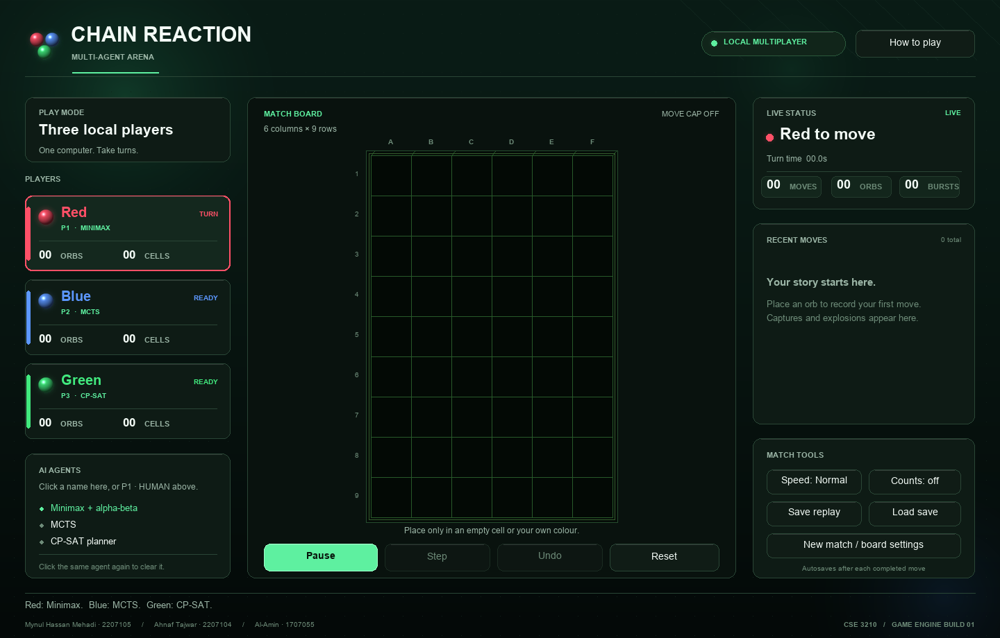
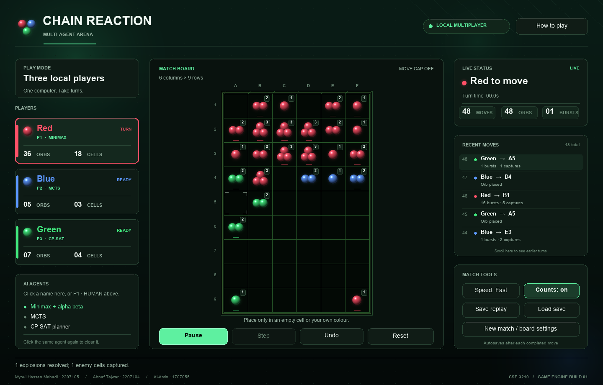
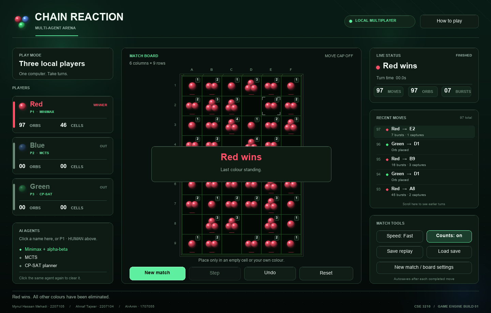
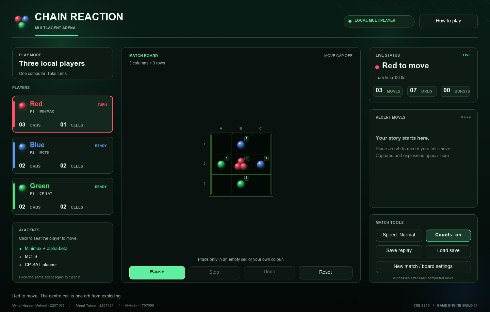
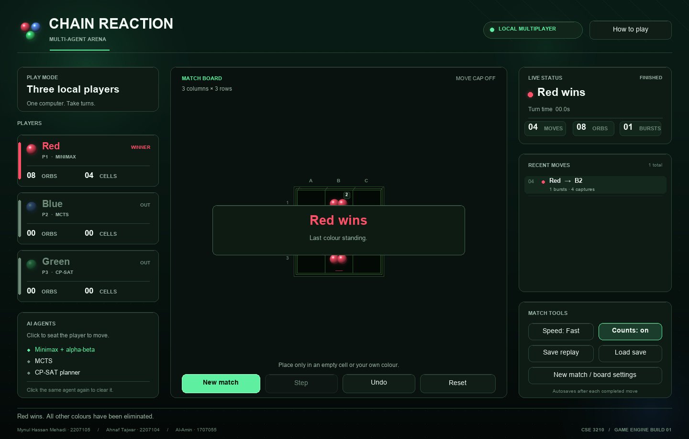
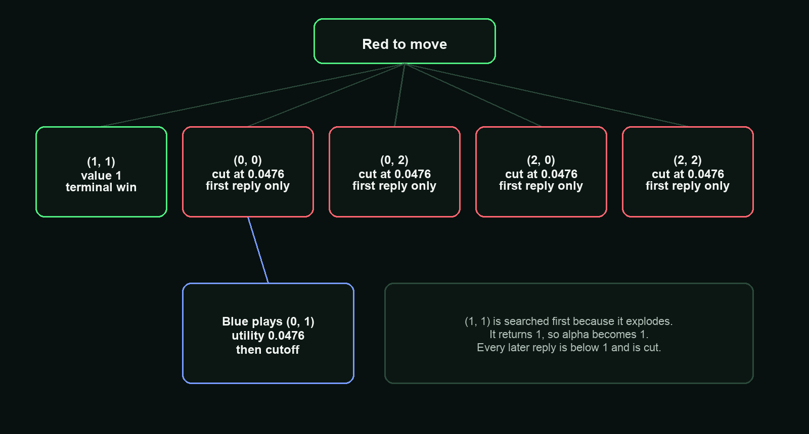
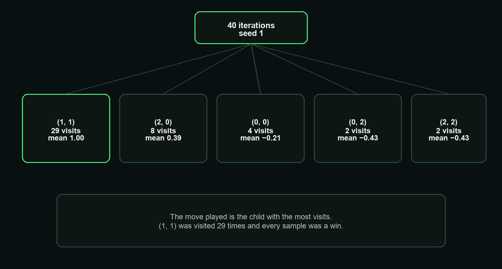

CSE 3210 · ARTIFICIAL INTELLIGENCE
Final project report
A deterministic three-player board game, with Minimax and alpha-beta, Monte Carlo tree search, and forward-checking search seated as the three players.
Mynul Hassan Mehadi
2207105
Ahnaf Tajwar
2207104
Al-Amin
1707055
20 November 2026
Chain Reaction is a local three-player game. Each move adds one orb. A corner explodes at two orbs, an edge at three, and an interior cell at four. The explosion converts the orthogonal neighbours and can start another explosion. After all three colours have entered, a colour with no orbs is eliminated. The last colour wins.
The search procedures come from the laboratory exercises and are adapted to this board. Minimax with alpha-beta deepens until the 0.22-second turn ends and keeps the last finished depth. Monte Carlo tree search revisits at most eight strong moves and plays the most visited one. The third agent is the laboratory forward checker: it assigns a move, reduces the next ply’s domain, and prunes a line once a reply is already worse than a finished move. On one shared position, where the centre cell wins immediately, all three procedures return that cell. Across twelve games on the default 9×6 board, Minimax won seven, MCTS won three, and the forward checker won two.
References follow the conclusion.
The laboratory exercises implemented Minimax for tic-tac-toe, Monte Carlo tree search for tic-tac-toe, and backtracking with forward checking for the n-queens problem. This project keeps those function names and control flow, and points them at Chain Reaction.
The board is larger than tic-tac-toe, and there are three players rather than two. A full search of a 9×6 position does not finish inside a turn a person can watch. Each agent therefore has a deadline, a move order, and a rule for what to return when time runs out. The rest of this report states the rules, shows the program, and then follows one position through all three procedures with the values the code actually produced.
Three players use one computer. Red moves first, then Blue, then Green. In the program they are players 0, 1 and 2. The default board has 9 rows and 6 columns and starts empty. A seat is human unless an agent name is clicked for the player about to move. Clicking the same name again clears that seat.
There is no network play and no hidden random opponent. Randomness appears only inside MCTS, and only while that agent is choosing. The rules themselves are deterministic: the same board and the same move always produce the same next board.
The engine stores an immutable State. apply_move resolves the placement and the whole chain, then returns a new state. Search calls that function through result and does not write on the live match.
A move is one integer pair, (row, column). The chosen cell must be empty, or it must already belong to the player about to move. An opponent’s cell cannot be played on directly. It can only be taken when an explosion reaches it.
Neighbours are the cells directly up, right, down and left. Diagonal cells are not neighbours. The critical mass of a cell is its number of neighbours.
When a cell reaches its critical mass it explodes. One orb is sent to each neighbour. Every orb already on a neighbour, whatever its colour, becomes the exploding player’s colour, and one is added. If that neighbour then reaches its own critical mass, it is queued. The queue is first-in, first-out, so the explosion that started earlier is processed first. The chain stops when no cell is over its critical mass, or when only one colour remains.
No colour is removed before all three players have taken at least one turn. After that, a colour with no orbs is eliminated and its turns are skipped. The match ends when one colour is left. That colour wins. It does not need to occupy every cell.
An optional move limit can end a match as a draw. The games in this report do not use that limit. If a chain repeats a state or exhausts the safety budget, the match is aborted. An abort is not recorded as a draw.
| File | Responsibility |
|---|---|
chain_reaction/engine.py | Board, legal moves, explosions, elimination and win test. |
chain_reaction/agents/minimax.py | max_value, min_value, minimax, alpha-beta, iterative deepening. |
chain_reaction/agents/mcts.py | MCTSNode, ucb1, selection, expansion, simulation, backpropagation. |
chain_reaction/agents/cpsat.py | is_safe, forward_check, backtrack_fc, iterative horizon. |
chain_reaction/agents/__init__.py | The three names and agent_by_name. |
chain_reaction/controller.py | Calls choose_move with a 0.22-second deadline, then places the cell. |
chain_reaction/render.py | Draws the arena used in the screenshots and the video. |
Each agent file repeats player, actions, result, terminal and utility, as the laboratory scripts did. A file can be read on its own. The controller only needs choose_move(state, deadline), which returns one legal cell.




All three agents see the board through the same five operations.
player(state) -> the seat about to move actions(state) -> legal cells, row by row result(state, a) -> apply_move(state, a).state terminal(state) -> the match is no longer playing utility(state) -> value for the seat that started the search
ordered(state) sorts those cells so a move that explodes is tried before a move that only adds an orb, and a fuller cell is tried before an empty one. That order is what makes alpha-beta and the forward checker look at the winning centre before the corners in Section 11.
If the searching player has won, the value is 1. If another colour has won, the value is −1. A draw or an abort is 0. While the match continues, each occupied cell contributes its orb count, plus 3 when the cell is one orb away from exploding. The searching player’s weights are added and the other two players’ weights are subtracted. The total is divided by a limit taken from the whole board, one term of critical mass + 2 per cell, and then clamped to the open interval (−0.99, 0.99). A proved win therefore always outranks a merely promising board.
Three players do not fit the laboratory’s two functions unless two of them share a side. The seat that is searching is the maximizer. The other two seats are both treated as minimizers. This is a paranoid model: it assumes both opponents will choose the reply that hurts the searching player, even when those opponents also compete with each other.
The laboratory functions are max_value, min_value and minimax. max_value keeps the largest child value. min_value keeps the smallest. next_value calls max_value when the player to move is the maximizer and min_value otherwise, so two opponent turns in a row both minimize.
function max_value(state, alpha, beta, depth):
if terminal(state) or depth = 0 or time is up:
return utility(state)
value <- −infinity
for action in ordered(state):
value <- max(value, next_value(result(state, action), alpha, beta, depth − 1))
if value ≥ beta: return value
alpha <- max(alpha, value)
return value
function min_value(state, alpha, beta, depth):
if terminal(state) or depth = 0 or time is up:
return utility(state)
value <- +infinity
for action in ordered(state):
value <- min(value, next_value(result(state, action), alpha, beta, depth − 1))
if value ≤ alpha: return value
beta <- min(beta, value)
return value
alpha is the best value the maximizer can already force. beta is the best value the minimizer can already force. A maximizing line that reaches beta will be refused by the minimizer above it, so the rest of that line is not generated. A minimizing line that falls to alpha will be refused by the maximizer, so the rest of that line is not generated.
choose_move does not jump to depth 6. It searches depth 1, then 2, and so on up to 6. If a depth is cut short by the clock, that partial result is discarded and the move from the last finished depth is played. On the 9×6 study the finished depth was usually 3.
A node stores the state, the action that produced it, its children, a visit count, a total value, and the actions not yet expanded. Those unused actions are kept in the same strong-to-weak order as ordered.
repeat until the iteration limit or the deadline:
node <- selection(root)
node <- expansion(node)
value <- simulation(node)
backpropagation(node, value)
return the root child with the largest visit count
Selection walks down the tree. If the node still has unused actions and fewer than eight children, selection stops there so expansion can add one. Otherwise the maximizer’s node chooses the child with the largest UCB score, and a minimizer’s node chooses the smallest.
if visits = 0: UCB = infinity
else: UCB = total_value / visits
+ 1.41 * sqrt( ln(parent.visits) / visits )
The first term follows the average already seen. The second term gives a rarely visited child another chance. The constant 1.41 is the laboratory value.
Expansion takes the first unused action, applies result, and stores one prior visit whose value is utility of the new state. Simulation then plays at most six more plies. If any legal cell would explode, the random choice is made among those cells; otherwise it is made among all legal cells. Backpropagation adds the simulation value on the way back to the root and increments every visit count on that path.
The eight-child limit is the change that makes the search usable on this board. Without it, the first fifty iterations of a 9×6 turn each open a different cell once, and the clock ends before any cell is compared a second time.
The third seat is labelled “CP-SAT planner” in the program. The procedure under that label is the laboratory n-queens search: is_safe, forward_check and backtrack_fc. An external CP-SAT solver is not used.
In n-queens, a row received one column. Here a ply receives one cell. Ply 0 is the move being chosen. Ply 1 is the next player’s reply. The horizon is how many plies are assigned. A domain is the set of cells still legal at that ply.
function is_safe(move, state):
if terminal(state): return false
return the cell is empty or owned by the player to move
function forward_check(move, domains, state):
copy the domains
if the next ply does not exist: return the copy
if state is terminal: next domain <- empty; return the copy
next domain <- ordered legal cells of state
if next domain is empty: return failure
return the copy
function backtrack_fc(ply, horizon, assignment, domains, state):
if ply = horizon or (ply > 0 and terminal(state)):
record utility(state) as a candidate worst score of assignment[0]
if that worst score cannot beat the best finished move:
mark the line pruned
return
for move in the domain of this ply:
if time is up: stop
if is_safe(move, state):
assign move
child <- result(state, move)
reduced <- forward_check(move, domains, child)
if reduced is not a failure:
backtrack_fc(ply + 1, horizon, assignment, reduced, child)
remove move
if this is ply 0 and the move was fully searched:
keep it when its worst reply is the best so far
if this is a later ply and the line is pruned:
stop the remaining replies
The n-queens program returned the first complete assignment. That would play the first cell in row order whenever that cell was merely legal. Here every candidate for ply 0 is scored by the worst reply below it, and the candidate with the best such worst reply is kept. choose_move repeats the search at horizon 1, then 2, up to 4, and keeps the last horizon that finished. A proved win, a score of 1, is kept even if later candidates were not reached.
| Laboratory behaviour | Behaviour in this project |
|---|---|
| Two players, X and O. | Three players. The searching seat maximises; the other two minimise. |
result writes a mark on a copied grid. | result calls apply_move. The state is immutable, so there is no extra copy. |
| Utility is only +1, −1 or 0 at a terminal position. | The same terminal values, plus a bounded heuristic while the match continues. |
| Moves are tried from the top left. | Exploding cells are tried first, then fuller cells. |
| Minimax has no alpha-beta and no depth limit. | Alpha-beta is inside max_value and min_value. Depth grows from 1 and stops at the deadline. |
| MCTS expands every unused action before it revisits a child. | A node expands at most eight children. Rollouts prefer explosions. The match budget replaces a fixed small iteration count. |
| Forward checking returns the first safe assignment. | Every first move is scored by its worst reply. A reply that cannot beat a finished move prunes the rest of that line. |
This section follows one position from the board, through every legal move, through the heuristic arithmetic, and then through the nodes each agent actually opens. The numbers are the values returned by the program on this position. They are not a sketch of a typical search.
The board is 3×3. Red is to move. All three players have already taken a turn, so a colour with no orbs can be eliminated. The centre, (1, 1), holds 3 red orbs. An interior cell explodes at 4. Cell (0, 1) and cell (1, 2) are blue, with one orb each. Cell (1, 0) and cell (2, 1) are green, with one orb each. The four corners are empty. In the window the columns are A, B and C, so the centre is B2.

(1, 1) in the engine. Red has 3 orbs in one cell.Red has five legal moves: the centre and the four corners. ordered puts the centre first because playing it explodes. The corners follow, each with orb count 0, so they stay in row order: (0, 0), (0, 2), (2, 0), (2, 2).
actions lists every empty cell and every cell owned by Red, in row order: (0, 0), (0, 2), (1, 1), (2, 0), (2, 2). The enemy cells are absent from that list. ordered then sorts by two keys, both descending, and the sort is stable. The first key is whether the move explodes. The second key is the orb count already in the cell.
Only (1, 1) explodes: it is Red’s cell, and 3 + 1 meets the interior critical mass of 4. It moves to the front. The four corners have count 0 and do not explode, so they keep the row order they already had. The order every agent uses is therefore:
(1, 1), the centre, which explodes.(0, 0), the top-left corner.(0, 2), the top-right corner.(2, 0), the bottom-left corner.(2, 2), the bottom-right corner.That order is the whole of the move-ordering idea on this position. The winning cell is tried before any corner, which is what lets alpha-beta and the forward-checking bound cut the corners afterwards.
Playing (1, 1) is one placement followed by one explosion. The steps are:
(0, 1), held one blue orb. It receives one red orb, so it becomes a red cell of 2. An edge explodes at 3, so this cell does not join the queue.(1, 2), was also one blue orb. It becomes red with 2 and does not explode.(1, 0), was one green orb. It becomes red with 2 and does not explode.(2, 1), was one green orb. It becomes red with 2 and does not explode.terminal is true and utility for Red is 1.There is no reply under a finished game. A search that reaches this child returns 1 and does not call the opponent’s move generator.

A finished win is 1 and a finished loss is −1. An unfinished board uses a score that is forced to stay inside −0.99 to 0.99, so it can never outrank a real win. For each occupied cell the weight is the orb count, plus 3 when the cell is one orb away from exploding (count >= critical mass − 1). Red’s weights are added. Every other colour’s weights are subtracted. The limit is the same for every position on this board: each cell contributes critical mass + 2, whether or not it is occupied.
| Cells | Critical mass | Each contributes | Subtotal |
|---|---|---|---|
| Four corners | 2 | 4 | 16 |
| Four edges | 3 | 5 | 20 |
| Centre | 4 | 6 | 6 |
| Whole board | 42 |
Playing (0, 0) does not explode anything. The new corner is a red cell of 1 on a critical mass of 2, so it is a threat and its weight is 1 + 3 = 4. The centre is still 3 red orbs on a critical mass of 4, so its weight is 3 + 3 = 6. Each enemy cell is a single orb that is not yet a threat.
| Cell | Owner | Count | Critical | Weight | Signed |
|---|---|---|---|---|---|
| (0, 0) | Red | 1 | 2 | 1 + 3 | +4 |
| (1, 1) | Red | 3 | 4 | 3 + 3 | +6 |
| (0, 1) | Blue | 1 | 3 | 1 | −1 |
| (1, 2) | Blue | 1 | 3 | 1 | −1 |
| (1, 0) | Green | 1 | 3 | 1 | −1 |
| (2, 1) | Green | 1 | 3 | 1 | −1 |
The signed sum is +4 + 6 − 1 − 1 − 1 − 1 = 6. Divided by the limit, 6 / 42 = 0.1429. This is the value of the position immediately after Red’s corner move, before Blue answers. The same 0.1429 is the value after any of the other three corners: each of those moves adds one threatened red corner and changes nothing else.
At depth 2 the opponent still moves. From the position after (0, 0), Blue has five legal cells. None of them explodes, because Blue’s two cells hold one orb and an edge explodes at 3. ordered therefore falls through to the orb count. (0, 1) and (1, 2) both have count 1, and the stable sort leaves the earlier row-major cell first. The first reply is (0, 1).
Adding one orb there changes only that cell. Its count goes from 1 to 2. Its critical mass is 3, so it becomes a threat. The weight changes from 1 to 2 + 3 = 5, and the signed contribution changes from −1 to −5. Every other row of the table above is unchanged. The score falls by 4, from 6 to 2. The limit is still 42. The value is 2 / 42 = 0.0476.
| Cell | After Blue plays (0, 1) | Signed |
|---|---|---|
| (0, 0) | Red, 1 orb, critical 2, threat | +4 |
| (0, 1) | Blue, 2 orbs, critical 3, threat | −5 |
| (1, 0) | Green, 1 orb, critical 3 | −1 |
| (1, 1) | Red, 3 orbs, critical 4, threat | +6 |
| (1, 2) | Blue, 1 orb, critical 3 | −1 |
| (2, 1) | Green, 1 orb, critical 3 | −1 |
+4 − 5 − 1 + 6 − 1 − 1 = 2, and 2 / 42 = 0.0476. A full depth-2 search, with no pruning, records this same 0.0476 for all five replies under all four corners. None of those twenty lines wins the game on the next ply. The minimax value of a corner is the minimum of its replies, which is 0.0476. The minimax value of the centre is 1. The root keeps the centre.

The root begins with alpha at negative infinity and beta at positive infinity. Depth is 2, so a root move is followed by one opponent ply and then the heuristic.
result of (1, 1) is the win in Section 11.2. The child is terminal, so the call returns 1 and never enters min_value. The root stores (1, 1) and raises alpha from −∞ to 1. Beta is still +∞.result of (0, 0) is the unfinished corner. It is passed to min_value with alpha 1 and beta +∞. Blue’s first reply, (0, 1), is not terminal, and the remaining depth is 0, so the call returns the heuristic 0.0476. That value is already less than or equal to alpha, so min_value returns at once. The other four replies under this corner are not generated. The root compares 0.0476 with 1 and does not replace (1, 1). Alpha stays 1.(0, 2) opens the same first reply, (0, 1), sees 0.0476, and cuts. Four replies are not generated.(2, 0) does the same. Four replies are not generated.(2, 2) does the same. Four replies are not generated.A depth-2 tree with no pruning would apply result 25 times: 5 moves at the root and 5 replies under each of the 4 corners. Alpha-beta applies it 9 times: the 5 root moves, plus one reply under each corner. Sixteen replies are never built. The action returned by minimax is (1, 1).
The trace uses 40 iterations, rollout depth 4, and seed 1. A match uses the same loop until 0.22 seconds have passed. While the root still has unused moves and fewer than eight children, selection stops at the root and expansion takes the next ordered move. The first five iterations therefore open the five children in the order of Section 11.1. A new child is given one prior visit whose value is utility of the position just created. The rollout then plays, and backpropagation adds that rollout on top of the prior.
| Iteration | What happens | Rollout |
|---|---|---|
| 1 | Expand (1, 1). The child is already terminal, so the rollout does not play a further move. The prior is also 1. | +1 |
| 2 | Expand (0, 0). The prior is the corner heuristic 0.1429. The rollout, up to four plies, happens to return a Red win. | +1 |
| 3 | Expand (0, 2). Same prior, 0.1429. The rollout returns a loss for Red. | −1 |
| 4 | Expand (2, 0). The rollout returns a Red win. | +1 |
| 5 | Expand (2, 2). The rollout returns a loss for Red. | −1 |
After these five iterations every child has two visits: the prior and the rollout. The root has been backed up five times. UCB is the mean plus 1.41 × √(ln(parent visits) / visits). With parent visits 5 and child visits 2, the exploration term is 1.26 for every child, so the means decide the order:
| Child | Mean after iteration 5 | UCB |
|---|---|---|
| (1, 1) | 1.00 | 2.26 |
| (0, 0) and (2, 0) | 0.57 | 1.84 |
| (0, 2) and (2, 2) | −0.43 | 0.84 |
Iteration 6 therefore selects (1, 1) again. Its state is terminal, so selection stops there, expansion does nothing, and the rollout returns 1. The same thing happens on iterations 7 and 8. From iteration 6 to iteration 40 the root has no unused moves, so selection walks by UCB. Of the 40 iterations, 28 select (1, 1) at the root, 7 select (2, 0), 3 select (0, 0), and (0, 2) and (2, 2) are selected once each. Those counts include the iteration that created the child. Six of the forty rollouts return −1. The other thirty-four return +1. The root’s backed-up total is 34 − 6 = 28.

| Child | Visits | Mean value |
|---|---|---|
| (1, 1) | 29 | 1.00 |
| (2, 0) | 8 | 0.39 |
| (0, 0) | 4 | −0.21 |
| (0, 2) | 2 | −0.43 |
| (2, 2) | 2 | −0.43 |
The visit counts in the figure add to 45, not 40. Each of the five children still carries its one prior visit, and that prior is not a visit of the root. The root itself was backed up once per iteration, so its visit count is 40. The decision rule does not use the mean and it does not use the final UCB. It uses the visit count, so (1, 1) is played. Its mean is also 1: all 28 rollouts that reached it, and its prior, were wins.
The final UCB values, with the root at 40 visits, show why a rarely visited corner can look competitive without ever catching up. Exploration is large when the visit count is 2:
| Child | Visits | Total | Mean | UCB |
|---|---|---|---|---|
| (1, 1) | 29 | 29 | 1.00 | 1.50 |
| (0, 2) | 2 | −0.86 | −0.43 | 1.49 |
| (2, 2) | 2 | −0.86 | −0.43 | 1.49 |
| (2, 0) | 8 | 3.14 | 0.39 | 1.35 |
| (0, 0) | 4 | −0.86 | −0.21 | 1.14 |
(0, 2) and (2, 2) finish within 0.02 of the centre on UCB, because they were barely sampled. They do not have more visits. The move played is the child with 29 visits.
choose_move tries horizons 1, 2, 3 and 4, and keeps the last horizon that finishes. On this position horizon 2 is enough to prove the win, and a proved win is accepted immediately.
At horizon 1 the search assigns only Red’s move. is_safe accepts the centre because Red already owns it. forward_check sees a terminal state and replaces the next ply’s domain with an empty list. The score of that assignment is 1. The bound, which started at −∞, becomes 1, and the saved move becomes (1, 1). A corner at this horizon scores 0.1429, the value in Section 11.3. That does not beat 1, so the saved move stays the centre.
At horizon 2 the centre is tried first again. It is still terminal, so it still has no replies, its worst-reply score is still 1, and the bound is still 1. Each corner is then assigned in the ordered list. For (0, 0) the next domain is Blue’s five legal cells. The first of them, (0, 1), reaches the horizon and scores 0.0476. That worst score is already less than or equal to the bound, so the flag that stops the rest of the line is set. The other four replies are not assigned. The corner’s worst score, 0.0476, does not raise the bound. (0, 2), (2, 0) and (2, 2) are cut the same way, each after the single reply (0, 1).
The move stored for the horizon is (1, 1). Horizons 3 and 4 cannot improve on a proved win. choose_move returns that cell.
The three procedures, given this position and enough time to finish it, agree on the cell and disagree on the reason. Minimax compares a terminal 1 with a minimized 0.0476 and cuts sixteen replies. MCTS spends 28 of 40 iterations on the terminal child and plays it because it has 29 visits. Forward checking raises the bound to 1 on the first assignment and then refuses every corner after one reply.
The default 9×6 board was played twelve times, two games for every seating of the three agents. Each turn received the same 0.22 seconds the controller gives during a match. No agent returned an illegal cell, and no agent ran past the deadline. Every game ended with a winner. Games lasted from 90 to 125 moves.
| Minimax | MCTS | Forward checking | |
|---|---|---|---|
| Wins | 7 / 12 | 3 / 12 | 2 / 12 |
| Wins as first / second / third | 3 / 3 / 1 | 1 / 2 / 0 | 1 / 1 / 0 |
| Mean time per move | 219 ms | 216 ms | 219 ms |
| Median time per move | 220 ms | 220 ms | 220 ms |
| Positions examined per move | about 7,100 | about 4,800 | about 8,800 |
| Positions per second | about 32,700 | about 22,400 | about 40,100 |
| Search that usually finished | depth 3 | 8 cells, then revisits | horizon 3 |
A position, in this table, is one call to result during the choice. It is a trial board, not a cell of the live board. Time does not separate the agents: all three use the turn they are given. The forward checker builds the most trial boards per second because it does not play random games. MCTS builds fewer, because part of each iteration is a rollout. Minimax builds fewer than the forward checker as well, but every value it keeps is the alpha-beta value of a finished depth. That is the practical difference behind the seven wins.
Each player card is a human/AI control. Clicking P1 · HUMAN cycles that seat through Minimax, MCTS, the forward checker, and back to human. The list under the cards still seats the player about to move, and clicking the seated name again returns that player to human. The recording uses the default 9×6 board, with the animation set to Fast and the frames played at 24 per second. The file is docs/Chain-Reaction-Gameplay-9x6.mp4 and it is embedded in the slide deck. Red was Minimax, Blue was MCTS, and Green was the forward checker. Red won after 97 moves. Figure 4 is the last frame. One match is not the comparison in Section 12.1. It is the gameplay the evaluation asked to see.
The laboratory procedures survive the move from tic-tac-toe and n-queens to Chain Reaction once the successor function is the real chain and the search is willing to stop. The shared utility makes a win strictly better than any heuristic, which is why the centre cell is selected as soon as it is generated. Alpha-beta, the visit limit, and the forward-checking bound are three ways of refusing work that cannot change that decision.
On the longer board the same deadline produces different strength. A finished three-ply minimax search won seven of the twelve games. Sampling eight promising moves won three. Scoring a three-ply assignment by its worst reply won two. The next improvement that the measurements support is not a faster inner loop. All three agents already fill the clock. It is a better use of the fourth ply, which none of them currently finishes on a 9×6 position.
player, actions, result, terminal, utility, max_value, min_value, minimax).MCTSNode, ucb1, selection, expansion, simulation, backpropagation).is_safe, forward_check, backtrack_fc).